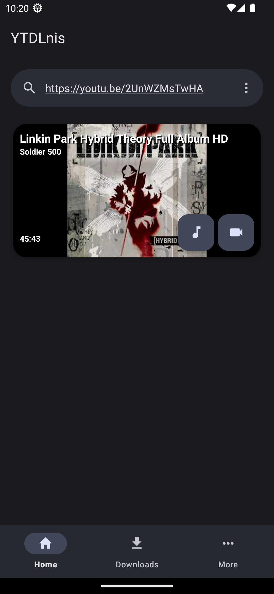
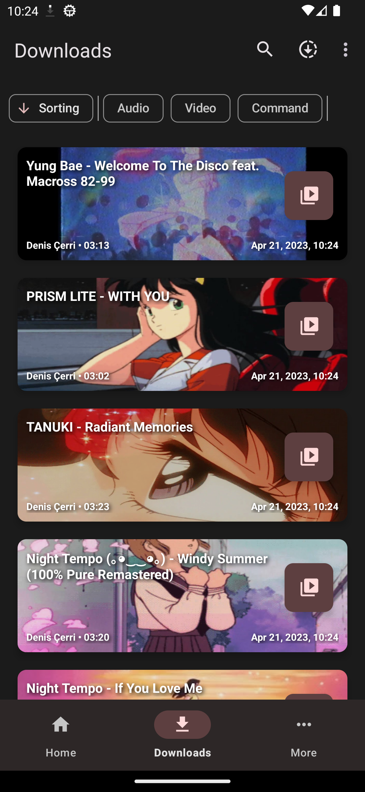
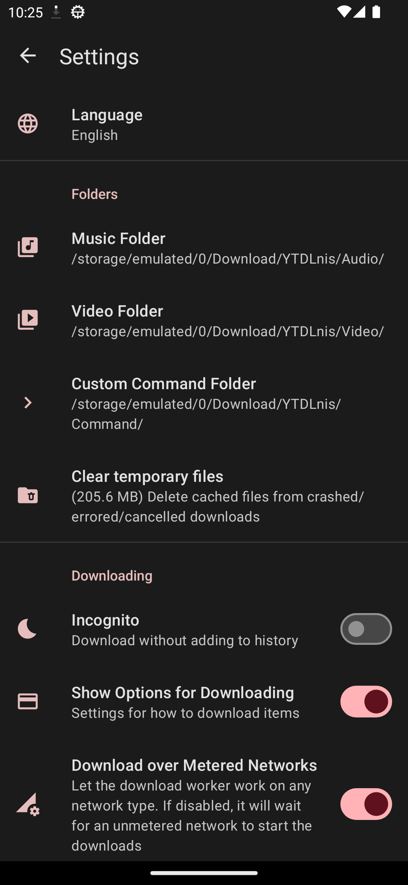

从零开始用 YTDLnis：五分钟装好，立刻能下
YTDLnis 是安卓上最好用的视频下载图形化界面之一，这篇文章从下载安装到第一次跑通，带你一步步上手音频下载、Cookie 登录等核心功能，全程不需要任何技术基础。
第一次接触 YTDLnis 不知道怎么下手？这篇能带你从完全不懂到用起来——全程不需要任何技术基础，五分钟装好就能跑通第一次下载。
它到底是干嘛的（一个生活化类比讲明白）
YTDLnis 本质上是安卓上跑 yt-dlp 的图形化界面，它的官网上有完整的说明和版本更新。yt-dlp 是一个开源的视频下载引擎，能从 YouTube、B 站、Twitter 等上千个网站拉取视频和音频。但 yt-dlp 本身是个命令行工具，要手动敲参数，对小白来说门槛很高。
YTDLnis 把这些复杂的命令行封装成了触屏友好的界面——打个比方：yt-dlp 是你厨房里的燃气灶和锅碗瓢盆，YTDLnis 就是把这些厨具整整齐齐摆好、还带大按钮触屏的集成厨房。你不用管怎么点火、怎么调火候，丢一条视频链接进去，它帮你选合适的厨具、做好端上桌。

五分钟上手：从安装到第一次下载的最短路径
第一步：把应用装到手机上
去官方下载拿安装包，用手机浏览器下载到本地，点 APK 文件就能装。安卓系统可能会弹"未知来源"的提示，允许一下就行——这是正常的安全提醒，不是病毒。
第二步：装两个必需的组件
YTDLnis 用的是组件化架构——核心下载功能之外的运行时依赖（比如 Python、FFmpeg）做成了独立的 Package，可以单独安装和更新。第一次打开应用，这两个是必须装的：
- 点底部的「更多」标签
- 进「设置 → Updating → Packages」
- 找到 Python 3（yt-dlp 的运行时，必装）和 FFmpeg（音视频处理，强烈推荐），分别点旁边的安装按钮
- 等它们下载完、自动装好
其他组件（Node.js、aria2 等）暂时不用碰——后面遇到特定站点报"需要 JS 运行时"再说。
第三步：丢一条链接试试
回到首页，顶部搜索栏直接粘贴一条 YouTube 或 B 站的视频链接。应用会自动解析出这个视频有哪些可用格式——点一下就能看到一列带预览图的选项：
- 左边是视频 + 音频合并好的格式（比如 1080p 的 mp4）
- 中间是纯视频流（只有画面没有声音，需要另外挑音轨合并）
- 右边是纯音频（只有声音，用来下歌）
新手推荐直接选左边合并好的那种，点进去确认一下文件名和保存位置，再点右下角那大大的下载按钮就完事了。

下载进度在「下载」标签页能看到，完成后自动保存到你设的文件夹里。恭喜——你已经跑通了第一次下载。
上手后先玩这三个功能
1. 音频模式：把视频变成歌
很多人用 YTDLnis 就是奔着下歌来的。在格式选择页面，切到「Audio」标签，选一个音频容器就能把视频的音轨单独抽出来保存。
这里有个新手容易踩的坑：转码不会提升音质。YouTube 原生只有 m4a（AAC）和 opus 两种音频格式，没有 mp3。当你选 mp3 时，YTDLnis 实际上是把原始的 m4a/opus 转码成 mp3——这个过程只能让音质不变或下降，不可能变好。
那到底选什么？给个简单的建议：
| 你的情况 | 推荐选 |
|---|---|
| 手机本地随便听听 | 留空不选 Container，保持原始 opus 或 m4a |
| 车载、老设备不支持 opus | mp3（接受一点音质损失） |
| 想无损存档 | flac 或 alac（文件会大很多） |
别被网上那种"转码到 320kbps 更清晰"的说法骗了，那是纯营销话术——原始格式的编码率才是真正的上限。关于容器格式的完整对比表，可以翻一下 YTDLnis 的文档。
2. 用 Cookie 解锁私密内容
默认情况下 YTDLnis 下载的是公开视频，但有些内容需要登录账号才能拿到：会员专属视频、年龄限制视频、订阅独家、YouTube Premium 的高码率格式（比如 256kbps AAC）。这时候就需要用 Cookie 登录。
操作很简单：
- 「更多 → Cookies」，点「New Cookie」
- 输入网站域名，比如
https://youtube.com - 应用内置浏览器打开，正常登录你的账号（扫码或密码都行）
- 登录完成后点顶部的「OK」按钮
- 最重要的一步：回到 Cookies 页面顶部，打开主开关「Use cookies」——不开的话 Cookies 白存了

之后下载这个网站的视频时，YTDLnis 就会带上你的登录凭证，能拿到匿名请求拿不到的内容。
有个安全提醒：Cookie 等于你账号的控制权，不要把 Cookie 导出来发给任何人，也不要把包含 Cookie 的备份文件传公开网盘。推荐专门用一个副号来放 Cookie，主号留着日常用更安全。
3. 一键备份：换手机不丢配置
YTDLnis 的备份功能非常好用——它会把你的全部设置、Cookies、命令模板、订阅源配置、下载历史一次性打一个包。换手机时只要装好应用，把备份文件导进来，一切就和旧手机一模一样，不用重新配置任何东西。
操作路径：「更多 → 设置 → Backup → Backup」，选个保存位置就行。建议备份文件存到云盘里，这样随时能拿到最新的。
唯一要注意的是：包含 Cookie 的备份永远不要分享——不管是发给朋友还是传到公开网盘。如果你想分享一套好用的命令模板又不想暴露自己的 Cookie，可以恢复备份后手动删掉 Cookies，或者直接编辑备份文件的 JSON 把 Cookies 数组删掉再分享。
小白的三个常见疑问
Q1：下出来的 mp3 音质为什么不如源视频？
这是因为 YouTube 原生就没有 mp3 格式。你选 mp3 容器时，YTDLnis 是从原始的 m4a 或 opus 转码过来的——转码只会降低或保持音质，不可能提升。想要音质最好就别选 Container，让它保持原始格式。
Q2：Cookie 安全吗？我的账号会被封吗？
YTDLnis 用的是你自己账号的 Cookie 来请求下载，这相当于告诉源站"我是这个账号，我有权限"。正常下载公开内容一般没问题，但如果批量下载大量 Premium 会员视频或用脚本自动化高频请求，确实有被风控标记的可能。保险起见用副号，而且不要用自动化脚本高频跑。
Q3：Packages 是什么？为什么我装完 Python 和 FFmpeg 还剩好多组件？
Packages 是 YTDLnis 的运行时依赖组件。Python 和 FFmpeg 是必装的，其他（Node.js、aria2 等）按需装就行。一般用户只会在这两种情况需要额外组件：某个站点报"需要 JS 运行时"时装一个 Node.js 或 Deno；想加速下载时装 aria2。不用全装，装多了反而浪费存储空间。
到这里你应该能独立完成日常的下载需求了。接下来如果想让下载更自动化，建议去试试 Observe Sources 功能——订阅一个频道或播放列表，它能定时检查有没有新视频、自动下载，连点都不用点。
这套工具的开发和整理资料在三个仓库都能拿到：GitHub 主仓同步了完整的文档和备份方案，国内访问慢的话可以去 Gitee 镜像拉一份，GitCode上也有方便社区协作的分支。